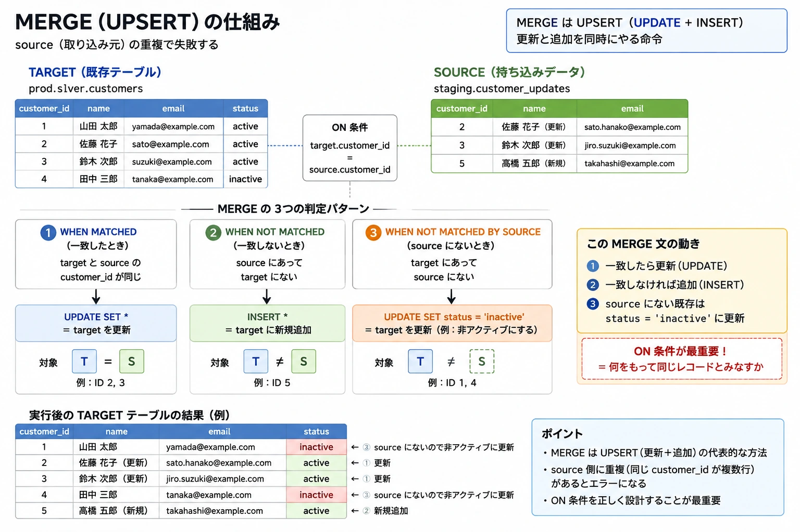

変換とモデリング
最大のドメインです。公式サンプル問題5問のうち3問がこの領域から出ています。そして誤答の作られ方がはっきりしているので、「どこで殺しにくるか」を知っておくと効率よく点が取れます。ここだけは、関数名・構文・既定値のレベルまで下ろして覚えます。
- 公式サンプル問題
- 3 / 5
- 対応レクチャー
- 13
- ガイドが名指しした関数・パラメータ
- 20+
- 末尾の確認問題
- 10
このドメインからの出題
コース最長のセクション
「関数名を直接聞ける」状態
答えは畳んであります
メダリオンアーキテクチャ分ける本質は「やり直せること」
メダリオンアーキテクチャ分ける本質は「やり直せること」
Bronze / Silver / Gold の3層に分けます。結論より、なぜ分けるのかを先に押さえます。 理由が分かっていると、「この要件はどの層か」を選ばせる問題で迷わなくなるからです。
1層でやると、こうなります。ソースから直接、集計済みテーブルを作る。動きます。 シンプルですし、処理も速いかもしれません。では何が問題になるか。3つあります。
- 作り直せない
- 集計ロジックを直したくなったとき、ソースから取り直すことになります。 ソースが SaaS の API なら、過去のデータはもう取れないかもしれません。
- 遡れない
- 元のデータが残っていないので、「この数字おかしくない?」と言われたときに確認できません。
- 影響範囲が切れない
- 誰かがロジックを変えると、それを使っている全部に波及します。分岐点が無いからです。
3層に分けると、これが解決します。Bronze があるので、ロジックを直しても Bronze から流し直すだけで済みます。 Silver が「正しい版の唯一の基準」になります。そして Gold は用途ごとに何個あってもかまいません——営業用の集計と経理用の集計を別々に作っても、 どちらも同じ Silver から作られているので数字が食い違いません。
本質は一言でいうと
「やり直せること」。Bronze を生のまま残すのは、あとで必ずロジックを直すからです。 必ず直します。最初から完璧なパイプラインは作れません。
| Bronze | Silver | Gold | |
|---|---|---|---|
| 形 | ソースのまま（ネストも保持） | 平坦化・型統一 | 集約済み |
| 重複 | 残す（届いた記録） | 排除する | — |
| NULL | 残す | 処理する | — |
| 結合 | しない | する | する |
| 品質チェック | 最小限 | ここが本番（Expectations） | — |
| 読み手 | 次の工程だけ | データエンジニア / 分析 | BI・業務ユーザー |
| 数 | 1つ | 1つ（正しい版） | 用途ごとに複数可 |
迷ったら——まだ触っていない＝Bronze、整えた＝Silver、まとめた＝Gold。 「触っていない・整えた・まとめた」の3語で切り分けます。
試験での引かれ方（逆引き）
| 問題文にこう書いてあったら | 答える層 | 根拠 |
|---|---|---|
| 生データを変更せずに保持したい | Bronze | 加工しないのが Bronze の役割 |
| 監査のためにソースの状態を残したい | Bronze | 取り込み履歴としての層 |
| NULL を除去し、型を揃えたい | Silver | ガイドが名指しした工程 |
| 複数ソースを突き合わせて正規化したい | Silver | 結合は Silver の仕事 |
| データ品質ルールを適用したい | Silver | Expectations の置き場所 |
| BI ダッシュボードが直接読む | Gold | 業務ユーザー向けの層 |
| 部門ごとの集計指標を作りたい | Gold | Gold は用途ごとに複数あってよい |
ガイドが工程ごと名指ししている
Implement data cleaning by reading bronze tables with PySpark/SQL, cleaning nulls, standardizing data types, and writing to new silver tables.
ここまで手順が具体的に書かれた objective は珍しく、この4手順がそのまま問題になると読めます。 このページでも独立した節を立てて分解します。
DDL / DML — 公式サンプル問題の分解語順が1つ違うだけの誤答で殺しにくる
DDL / DML — 公式サンプル問題の分解語順が1つ違うだけの誤答で殺しにくる
公式サンプル問題5問のうち2問がここから出ています。しかもその2問とも objective が Identify DDL/DML features と明記されています。確実に出る領域です。
3つの作り方を区別する
すべての出発点は、「既にテーブルがあったら、どうなるか」という1本の軸です。
| 書き方 | 既にテーブルがあったら | 使いどころ |
|---|---|---|
CREATE TABLE t (...) | エラー | 新規のみを確実に |
CREATE TABLE IF NOT EXISTS t (...) | 何もしない（既存を残す） | 何度流しても壊さない |
CREATE OR REPLACE TABLE t (...) | 作り直す（中身は消える） | 存在に関係なくその形にしたい |
公式サンプル問題：空の Delta テーブルを、既存の有無に関係なく作る SQL は？
- A（正解）
CREATE OR REPLACE TABLE t (employeeId STRING, ...) - B
CREATE TABLE IF NOT EXISTS t (...)— 既存があると作り直さない。「関係なく」を満たさない - C
CREATE TABLE t AS SELECT employeeId STRING, ...— CTAS は空にならない。SELECT の書き方も不正 - D
CREATE OR REPLACE TABLE t WITH COLUMNS (...) USING DELTA—WITH COLUMNSという構文は存在しない
誤答の型が3つ見えます：条件を1つ外す（B）／目的を外す（C）／存在しない構文（D）。 この3型は他の問題でも繰り返し使われます。
問題文の決め手は regardless of whether a table already exists with this name の
「関係なく」という一語でした。あってもなくても同じ結果になってほしい、
ということは CREATE OR REPLACE しかありません。
D はいちばん厄介です。CREATE OR REPLACE も USING DELTA も本物なので、
それらしく見えます。見慣れない句が出てきたら、まずその句の存在を疑ってください。
CTAS — スキーマが SELECT から決まる
CREATE OR REPLACE TABLE prod.silver.orders AS
SELECT
CAST(order_id AS INT) AS order_id,
CAST(amount AS DOUBLE) AS amount,
TO_DATE(order_date, 'yyyy-MM-dd') AS order_date,
UPPER(TRIM(region)) AS region
FROM prod.bronze.orders
WHERE order_id IS NOT NULL;CTAS（CREATE TABLE AS SELECT）は列定義を書きません。 SELECT した結果の形が、そのままテーブルの形になります。だからこそ 空のテーブルは作れません——SELECT の結果がそのままデータとして入るからです。 実務では Silver / Gold を作るときの定番の形で、メダリオンの流れがそのまま1文になります。
そのほかの DDL
| やりたいこと | 構文 |
|---|---|
| 列を追加する | ALTER TABLE t ADD COLUMN c STRING |
| テーブル名を変える | ALTER TABLE t RENAME TO t2 |
| 定義・実体の場所を確認する | DESCRIBE EXTENDED t |
| 消す | DROP TABLE IF EXISTS t |
DESCRIBE EXTENDED は覚えておいてください。
そのテーブルが managed か external か、実体がどこにあるかを確認する手段です。
ガバナンス側で「どうやって確認するか」を問われたときの答えになります。
DML — 動詞と語順
公式サンプル問題：既存の Delta テーブルに行を追加する SQL は？
- A
UPDATE VALUES (...) my_table— 動詞が違う。構文も不正 - B
UPDATE my_table VALUES (...)— 形は整っているがUPDATE は追加しない - C
INSERT VALUES (...) INTO my_table—INTOの位置が違う - D（正解）
INSERT INTO my_table VALUES (...)
4択のうちまともな SQL は1つだけ。 「追加＝INSERT／変更＝UPDATE」と「INTO は動詞の直後」だけで切れます。 逆に言うと、この2つが曖昧だと4つとも似て見えます。
DML の4命令
| 命令 | すること | PySpark の対応 |
|---|---|---|
INSERT INTO t VALUES (...)INSERT INTO t SELECT ... | 足す | mode("append") |
INSERT OVERWRITE t SELECT ... | 入れ替える（洗い替え） | mode("overwrite") |
UPDATE t SET c = v WHERE ... | 既存の行を変える | — |
DELETE FROM t WHERE ... | 行を消す | — |
DELETE してもストレージは減らない
Delta は既存ファイルを書き換えません。該当行を除いた新しいファイルを書き、 ログの参照を切り替えます。旧ファイルは物理的に残ります。 減らすのは VACUUM です。 「削除の操作」と「物理削除」は別——この2段構えは繰り返し問われます。
そもそも、なぜ Delta なら行単位の UPDATE / DELETE / MERGE が使えるのか。
トランザクションログが参照を切り替えてくれるからです。素の Parquet や CSV には
「行単位の更新」という概念がなく、ファイル全体を書き直すしかありません。
「なぜ Delta を使うのか」と問われたら、①ACID が効く ②行単位の更新・削除ができる——この2つです。
MERGE（UPSERT）分岐は3つ。source の重複で失敗する
MERGE（UPSERT）分岐は3つ。source の重複で失敗する
更新と追加を同時にやる命令です。一般に UPSERT（UPDATE ＋ INSERT）と呼ばれます。
MERGE INTO prod.silver.customers AS target
USING staging.customer_updates AS source
ON target.customer_id = source.customer_id
WHEN MATCHED THEN UPDATE SET *
WHEN NOT MATCHED THEN INSERT *
WHEN NOT MATCHED BY SOURCE THEN UPDATE SET status = 'inactive';INTO が更新される側（target）、USING が持ち込む側（source）、
ON が同一とみなす条件です。
この ON がいちばん重要で、「何をもって同じレコードとみなすか」を決めています。
{kind=link}

prod.silver.customers と staging.customer_updates に
適用したときの、突き合わせ・3つの判定・実行後の結果までが1枚に入っています。
以降の節で、この図の各部分を順に説明します。なぜ UPDATE と INSERT を2回に分けないのか
技術的には分けても書けます。しかし2回に分けると、その間に他の処理が割り込む余地が生まれます。 UPDATE が終わって INSERT が始まる前に誰かが読むと、中途半端な状態を見ることになります。 MERGE は1つのトランザクションで実行されるので、全部終わってから切り替わります。 Delta の ACID がここで効いてきます。
節のバリエーション
| 書き方 | 意味 |
|---|---|
WHEN MATCHED AND source.is_deleted THEN DELETE | 一致し、かつ条件を満たしたら削除。条件を足せる |
WHEN MATCHED THEN UPDATE SET * | 全列を更新 |
WHEN MATCHED THEN UPDATE SET name = source.name | その列だけ更新 |
WHEN NOT MATCHED THEN INSERT * | 全列を挿入 |
WHEN NOT MATCHED THEN INSERT (a, b) VALUES (...) | 列を指定して挿入 |
NOT MATCHED BY SOURCE です。ソース側に無くなった行——つまり元で削除された行を、ターゲットからも消したいときに使います。「同期したい」「元に無い行は消したい」と書いてあったら、この3つ目が要ります。MATCHED とNOT MATCHED の2つだけでは足りません。分岐は3つある
多くの人は MATCHED と NOT MATCHED の2つだと思っています。
3つ目の NOT MATCHED BY SOURCE は
「target 側にはあるが source 側には無い行」。
毎日届く全件リストから消えた顧客を失効させる、といった論理削除に使います。
知らないと選択肢を切れません。
MERGE が失敗するとき
source に同一キーの行が複数あると、1つの target 行に複数の更新が当たり、どちらを適用すべきか決められず エラーになります。対処は MERGE の前に source を重複排除すること。
このとき dropDuplicates では不十分です。どの行が残るか不定だからです。
顧客情報の更新で古い情報が残ってしまっては困ります。「最終更新日時が最新の1件」を確実に残すには
ROW_NUMBER() を使います。
WITH ranked AS (
SELECT *,
ROW_NUMBER() OVER (
PARTITION BY customer_id
ORDER BY updated_at DESC
) AS rn
FROM staging.customer_updates
)
SELECT * EXCEPT (rn) FROM ranked WHERE rn = 1;「MERGE が失敗する」と書いてあったら、まず source 側の重複を疑う。 これは重複排除の3手と直結する論点です。
MERGE が遅いとき
MERGE は ON の条件で target 全体を探しにいきます。
キーの値がファイルの中に散らばっていると、多くのファイルを読むことになります。
クラスタ増強も VACUUM も効きません。 クラスタを大きくしても読むファイル数は変わらず、VACUUM は古いファイルを消すだけで現行の配置を変えません。 正しい方向は MERGE キーでのレイアウト最適化＝ Liquid Clustering（旧来は ZORDER BY）。
MERGE 自体は性能改善の機能ではありません。 MERGE は「更新と追加を同時にやる」機能であり、遅いのは MERGE の問題ではなくデータのレイアウトの問題です。 この切り分けができると、問題を読んだ瞬間に答えの方向が決まります。
データクレンジング — ガイドが名指しした4手順objective が手順として列挙している
データクレンジング — ガイドが名指しした4手順objective が手順として列挙している
試験ガイドの objective を、もう一度そのまま置きます。
Implement data cleaning by reading bronze tables with PySpark/SQL, cleaning nulls, standardizing data types, and writing to new silver tables.
①Bronze を読む ②NULL を処理する ③型を標準化する ④Silver へ書く。 多くの objective は「〜を理解している」という書き方なのに、ここだけ手順として列挙されています。 この4手順はそのまま問題になると読んでいいので、1つずつ分解します。
① NULL の処理 — 方針は3つ
| 方針 | PySpark | SQL | どういうときか |
|---|---|---|---|
| 落とす | df.na.drop(subset=["customer_id"]) | WHERE customer_id IS NOT NULL | キー列。結合も集計単位も決まらない |
| 埋める | df.na.fill({"qty": 0}) | COALESCE(qty, 0) | 数量・金額。落とすと注文ごと消える |
| 代替値を順に試す | coalesce(col("a"), col("b"), lit("unknown")) | COALESCE(a, b, 'unknown') | 優先順位を付けて、最初に見つかった値を使う |
大事なのはどの方針を選ぶかです。
customer_id や order_id が NULL の行は、結合もできず集計の単位も決まらないので、
Silver に置いておく意味がありません。落とします。
一方 qty が NULL なら 0 として扱いたいことがよくあります。
落としてしまうと、その注文自体が消えてしまいます。
「全部落とす」「全部埋める」は誤答になりやすい
列の意味によって使い分ける、が正解の方向です。 一律の方針を述べている選択肢は、それだけで疑ってかまいません。
② 型の標準化 — 使う関数は3種類
from pyspark.sql.functions import col, to_date, trim, upper
silver = (bronze
.withColumn("order_id", col("order_id").cast("int"))
.withColumn("amount", col("amount").cast("double"))
.withColumn("order_date", to_date(col("order_date"), "yyyy-MM-dd"))
.withColumn("region", upper(trim(col("region")))))| 関数 | 役割 | 補足 |
|---|---|---|
cast | 型を変える | 失敗しても例外にならない（次項） |
to_date | 文字列を日付にする | 書式を第2引数で指定できる |
trim / upper | 表記のゆれを揃える | " JP " と "jp" が別グループになる事故を防ぐ |
取り込みで見たとおり、JSON と CSV は既定で
ほぼ全部 string として推論されます。だから Silver で cast が要るわけです。
取り込みで文字列として入り、Silver で正しい型に直す——この流れがセクションをまたいで繋がっています。
③ cast の落とし穴 — 静かに NULL になる
try_cast ではなく、変換前に検証を挟むか、Expectations で宣言します。cast は失敗してもエラーにならない
amount に "1,200"（カンマ区切り）や "N/A" が入っていたとします。
cast("double") すると——例外は出ません。静かに NULL になります。
処理は正常に終わり、そのまま集計されます。結果として金額が過少に出ます。 「なんか数字が合わないな」となったときに、原因を探すのが大変です。
対処は2つ。cast の前に整形する（カンマ・空白の除去）か、 cast の後に検証する（NULL 率が異常に高くないかを Expectations で機械的に検出する）。
これは Delta の機能ではなく Spark の型変換の仕様です。 「集計結果の数値が合わない。考えられる原因は」という設問で、 cast 失敗による NULL 化を候補として持っておいてください。
④ Silver へ書く — mode は4つ
(silver.write
.mode("append") # append / overwrite / error / ignore
.saveAsTable("prod.silver.orders"))| mode | 既存テーブルがあったら | SQL の対応 |
|---|---|---|
append | 追記する | INSERT INTO |
overwrite | 中身を入れ替える | INSERT OVERWRITE |
error / errorifexists | 失敗する（既定） | — |
ignore | 何もしない | CREATE TABLE IF NOT EXISTS に近い発想 |
試験は SQL と PySpark のどちらの形でも出ます。 「追記なら SQL は INSERT INTO、PySpark は mode の append」のように、 セットで思い出せるようにしておくと強いです。
Bronze → Silver を通しで書く4手順をそのままコードにする
Bronze → Silver を通しで書く4手順をそのままコードにする
前節の4手順を、切れ目なく1本のコードにします。 この形が頭に入っていると、選択肢の中で「どこが欠けているか」が見えるようになります。
PySpark で書く
from pyspark.sql.functions import col, to_date, trim, upper, coalesce, lit
# ① Bronze を読む
bronze = spark.table("prod.bronze.orders")
# ② NULL を処理する（キーは落とす／数量は埋める／地域は代替値）
cleaned = (bronze
.na.drop(subset=["order_id", "customer_id"])
.na.fill({"qty": 0})
.withColumn("region", coalesce(col("region"), lit("UNKNOWN"))))
# ③ 型を標準化する（cast は失敗しても NULL になるだけ、を忘れない）
typed = (cleaned
.withColumn("order_id", col("order_id").cast("int"))
.withColumn("amount", col("amount").cast("double"))
.withColumn("order_date", to_date(col("order_date"), "yyyy-MM-dd"))
.withColumn("region", upper(trim(col("region")))))
# ④ Silver へ書く
(typed.write
.mode("overwrite")
.saveAsTable("prod.silver.orders"))同じことを SQL で書く
CREATE OR REPLACE TABLE prod.silver.orders AS
SELECT
CAST(order_id AS INT) AS order_id,
customer_id,
COALESCE(CAST(qty AS INT), 0) AS qty,
CAST(amount AS DOUBLE) AS amount,
TO_DATE(order_date, 'yyyy-MM-dd') AS order_date,
UPPER(TRIM(COALESCE(region, 'UNKNOWN'))) AS region
FROM prod.bronze.orders
WHERE order_id IS NOT NULL
AND customer_id IS NOT NULL;PySpark 版が mode("overwrite")、SQL 版が CREATE OR REPLACE。
どちらも「作り直す」側で対応しています。
日次で積み上げたいなら mode("append") ／ INSERT INTO に変えます。
書いたあとに、必ず測る
cast は静かに失敗します。だから書きっぱなしにせず、NULL 率を見るのが実務の作法です。
SELECT
COUNT(*) AS rows_total,
SUM(CASE WHEN amount IS NULL THEN 1 ELSE 0 END) AS amount_null,
SUM(CASE WHEN order_date IS NULL THEN 1 ELSE 0 END) AS date_null
FROM prod.silver.orders;この検証を「宣言」に変えたのが Expectations
上のような検証クエリを毎回自分で書き、件数を数え、ログに残し、除外する—— その3つ（チェック・記録・除外）をまとめて宣言できるのが Declarative Pipelines の Expectations です。 「自前で書くとこうなる」を知っていると、Expectations の価値が具体的に説明できます。
なお count("amount") はNULL を数えません。
NULL 件数を数えたいときに count(列) を使うと、逆に見えなくなります。
上のように CASE WHEN か count(*) との差で見ます。
PySpark の要点 — 列と行・結合・集計ガイドが関数名を1つずつ列挙している領域
PySpark の要点 — 列と行・結合・集計ガイドが関数名を1つずつ列挙している領域
この領域だけ、ガイドの書き方が違います。 adding, dropping, splitting, renaming column names, applying filters, and exploding arrays のように 操作名が具体的に列挙されています。「この操作をする関数はどれか」を直接聞ける状態です。 だから、関数名レベルで押さえます。
列と行
| やりたいこと | 関数 | 注意点 |
|---|---|---|
| 計算列を足す | withColumn | 同名を指定すると上書き（cast がこの形） |
| 固定値の列を足す | withColumn ＋ lit | lit を付けないとエラー |
| 列名を変える | withColumnRenamed | （旧名, 新名）の順 |
| 列を消す | drop | 複数並べてまとめて消せる |
| 文字列を分ける | split | 結果は配列。添字か explode で取り出す |
| 行を絞る | filter / where | 同じもの。複数条件は & | と括弧。Python の and / or は使えない |
| 配列を行に開く | explode | 空・NULL の行は消える。残すなら explode_outer |
from pyspark.sql.functions import col, lit, split, explode, explode_outer
df = (df
.withColumn("total", col("qty") * col("price")) # 計算列
.withColumn("source", lit("web")) # 固定値には lit が必須
.withColumnRenamed("cust_id", "customer_id")
.drop("tmp_a", "tmp_b"))
# split の結果は「配列」。そのままでは列にならない
parts = split(col("region_code"), "-") # "JP-TOKYO" -> ["JP", "TOKYO"]
df = df.withColumn("country", parts[0]).withColumn("city", parts[1])
# 複数条件は & | と括弧。Python の and / or は不可
df = df.filter((col("amount") > 1000) & (col("region") == "JP"))
# 配列を行に開く
one_per_item = df.select("order_id", explode("items").alias("item"))
keep_empty = df.select("order_id", explode_outer("items").alias("item"))lit を付けないとエラーになる理由
withColumn("source", "web") と書くと、Spark は
"web" という名前の列を探しにいきます。見つからないのでエラーです。
lit（literal の略）を付けて「これは列名ではなく値です」と伝える必要があります。
explode は行を減らす
配列が空、または NULL の行は結果から消えます。
「注文はあるが商品が1つも入っていない」行が、集計から丸ごと落ちます。
症状は「行数が減った」。残したいなら explode_outer——
値は NULL になりますが、行自体は残ります。
結合
orders.join(customers, on="customer_id", how="inner") # 結合列は1つにまとまる
orders.join(customers, on=["customer_id", "region"], how="left") # 複数キー
orders.join(customers,
orders.cust_id == customers.customer_id, "left") # 両方の列が残る
from pyspark.sql.functions import broadcast
orders.join(broadcast(region_master), on="region", how="left") # シャッフルを避けるon="col" と文字列で渡すと結合列が1つにまとまり、
条件式で渡すと両方の列が残ります。
「なぜ同じような列が2つあるんだ」となるのは、たいてい後者です。あとで select で片方を落とします。
| 結合 | 残るもの | 典型的な使いどころ |
|---|---|---|
inner | 両方にある行だけ | マスタに無い注文は不正、という設計なら |
left | 左は全部（右が無ければ NULL） | 売上を落としたくないとき |
cross | 全組み合わせ | 日付マスタ × 店舗マスタで「枠」を作る |
broadcast() | （結合方法の指定） | 大 × 小。シャッフルを避ける |
broadcast join は、小さい方を全ノードにコピーして
シャッフル（同じキーのデータを同じノードに集める通信）を避ける手です。
注文1億行と地域マスタ50行を結合するのに、1億行を動かすのはもったいない——という発想です。
自動判定の閾値が spark.sql.autoBroadcastJoinThreshold（既定 10MB）。
明示的な broadcast() は、この閾値を無視して強制します。
cross join は事故で起きます。結合条件を書き忘れた join が実質 cross join になり、 1万行 × 1万行で1億行。症状は「処理が終わらない」「行数が爆発した」。 一方で、日付 × 店舗の全組み合わせを作ってから実績を left join すれば 「売上ゼロの日を0として表示する」土台になります。意図して使うぶんには正しい道具です。
PySpark の union は重複を排除しない
SQL の UNION は重複を排除しますが、
PySpark の df1.union(df2) は排除しません（SQL の UNION ALL 相当）。
消したいなら .distinct() を明示します。
unionAll は union の別名（非推奨）で、動作は同じです。
さらに union は列名ではなく位置で結合します。
型が同じならエラーにならず、顧客名の列に地域名が入ったまま通ります。
「列の順序が違う可能性がある」と書いてあれば unionByName。
集計 — 公式サンプル問題
from pyspark.sql.functions import sum, count_distinct
daily = (billing
.groupBy("billing_date")
.agg(sum("amount_billed").alias("total_revenue"),
count_distinct("billing_id").alias("total_invoices")))日ごとの請求額合計と、ユニークな請求書数を集計する
- A
sum(amount),sum(billing_id)— ID を合計している - B
sum(amount),count_distinct(patient_id)— 列が違う（患者数であって請求書数ではない） - C（正解）
sum(amount),count_distinct(billing_id) - D
col(amount),count(billing_id)—colは集計関数ではない。aggに置けない
いちばん厄介なのは B です。文法的に正しく、それらしく見えます。 C と B を分けるには、問題文の「ユニークな」という一語を正確に読む必要があります。 この問題が本当に試しているのは、PySpark の知識だけではありません。
誤答の作られ方は3種類に整理できます。 関数が違う（A）／集計になっていない（D）／列が違う（B）。 A と D はコードとして明らかにおかしいので気づけます。B だけが読解の勝負になります。
押さえる集計関数
| 関数 | 返すもの | 注意 |
|---|---|---|
count("col") | NULL を除いた件数 | NULL を数えない。件数が合わない原因 |
count("*") | NULL を含む行数 | — |
count_distinct("col") | ユニーク数（正確） | 全データを突き合わせるのでシャッフルが大きい |
approx_count_distinct("col") | ユニーク数（近似） | 誤差はあるが明確に速い。大規模向け |
sum / mean / min / max | 合計・平均・最小・最大 | mean は avg と同じ |
summary / describe | 件数・平均・標準偏差・分位数など | データの概要を掴むとき |
count("col") が NULL を数えないことは、
cast の失敗と連鎖します。
型変換に失敗 → 静かに NULL → count で数えられない → 件数が合わない。
複数レクチャーをまたいだ出題ができる形です。
正確なユニーク数が要るなら count_distinct（経理の数字など）。
大規模データで概数が速く欲しいなら approx_count_distinct（ダッシュボードの「だいたい何万人」）。
ガイドがわざわざ approximate 版を名指ししているので、この対比は問われます。
重複排除の3つの手
| 手 | 何が同じ行を消すか | 残る行 |
|---|---|---|
df.distinct() | 全列が同じ行 | （完全重複なのでどれでも同じ） |
df.dropDuplicates(["k"]) | 指定した列が同じ行 | 不定。どれが残るか分からない |
ROW_NUMBER() ＋ rn = 1 | 指定したキー | 指定できる（例：更新日時が最新） |
「重複を消したい」だけなら dropDuplicates、
「どれを残すかが重要」なら ROW_NUMBER。
MERGE の前処理で dropDuplicates が不適切なのは、まさにこの理由です。
Gold 層のオブジェクトガイドが「違いを理解する」と明記した4つ
Gold 層のオブジェクトガイドが「違いを理解する」と明記した4つ
ガイドは understand the differences between …materialized views, views, streaming tables, tables と、 「違いを理解する」とはっきり書いています。4つを並べて選ばせる問題が来る、と読めます。
4つを個別に覚えると混乱します。軸を2つ立てます。 実体を持つかと、誰が更新するかです。
| 実体を持つ | 更新のされ方 | 読むときのコスト | |
|---|---|---|---|
| View | 持たない | 毎回クエリを実行 | 毎回かかる |
| Table | 持つ | 自分で書き込む | 安い |
| Materialized View | 持つ | 自動でリフレッシュ | 安い |
| Streaming Table | 持つ | 到着分を増分で追記 | 安い |
まず「実体を持つか」で 1 対 3に割れます。View だけが持ちません。 残り3つの違いは「誰が・どうやって更新するか」です。
View — 保存されるのは定義だけ
CREATE OR REPLACE VIEW prod.gold.active_customers AS
SELECT * FROM prod.silver.customers WHERE status = 'active';保存されるのはクエリの文面だけで、データは保存されません。 読むたびに、その場で元テーブルに対してクエリが走ります。
- いいところ
- 常に最新。元テーブルが変われば即座に反映されます。ストレージも消費しません。 「この集計の定義はこれです」を1箇所に置ける＝ロジックの共有に向きます。
- つらいところ
- 読むたびに全部計算し直します。重い集計を10人が1日10回ずつ見たら、 100回計算していることになります。
- TEMP VIEW
- 一時的な View。セッションの中だけで有効です。
Materialized View — 結果を持ち、自動で更新される
CREATE OR REPLACE MATERIALIZED VIEW prod.gold.daily_sales AS
SELECT order_date, region, SUM(amount) AS total
FROM prod.silver.orders
GROUP BY order_date, region;書き方は View とほぼ同じで、MATERIALIZED が入るだけ。しかし動作が違います。
計算結果を実体として保持するので、読むときは既にある結果を返すだけです。速く、安い。
Table との違いは「更新を自分で書かない」こと。
Table なら INSERT や MERGE を自分で書いて自分で実行します。
MV は定義に基づいて自動でリフレッシュされ、可能なら増分で更新します。
View（毎回計算）と Table（自分で更新）の中間、というイメージです。
Streaming Table — 到着した分だけ足す
追記されるデータを、到着した分だけ処理して積んでいくものです。 Auto Loader の書き込み先として使われます。
MV と ST の分かれ目は「作り直す／足す」
MV は定義の結果を作り直すもの。日次売上合計は、新しい注文が来ればその日の合計が変わるので、 その日の全データを見る必要があります。集計のように全体を見るものに向きます。
ST は新しく来た分を足すもの。イベントログのように過去は変わらず、 ただ増えていくデータに向きます。
引き方（逆引き）
| 問題文にこう書いてあったら | 答え |
|---|---|
| ロジックを共有したい／常に最新であればよい | View |
| ストレージを消費したくない | View |
| 重い集計を BI が繰り返し読む | Materialized View |
| 集計結果を自動で最新に保ちたい | Materialized View |
| 到着したデータを増分で積み上げたい | Streaming Table |
| Auto Loader の書き込み先 | Streaming Table |
| 自分で書き込みを制御したい | Table |
MV と ST は、次節の Declarative Pipelines の中核オブジェクトです。
ここでの判断が、そのまま次節の書き方（MATERIALIZED VIEW か STREAMING TABLE か）になります。
Declarative Pipelines と Expectations旧 DLT。順番を書かず、関係だけを書く
Declarative Pipelines と Expectations旧 DLT。順番を書かず、関係だけを書く
正式名称は Lakeflow Spark Declarative Pipelines。旧 Delta Live Tables（DLT）です。
ネット上の情報はほぼ全部 DLT という名前で書かれているので、調べ物は DLT で検索してください。
ライブラリ名も dlt のままです。
「宣言的」とは、順番を書かないこと
手続き的なやり方は「bronze を作る → その後 silver → その後 gold」と順番を人が書きます。 テーブルが1つ増えるたびに順番を直し、どこに挿入すべきかを人が考えます。 テーブルが50個、100個になると、順番の管理だけで大仕事になります。
宣言的なやり方は「silver は bronze から作られる」と関係だけを書きます。 順序・依存・リトライは、その宣言から導出されます。 書くのは「どう作るか」ではなく「何であるか」——これが宣言的という言葉の意味です。
CREATE OR REFRESH STREAMING TABLE bronze_orders
AS SELECT * FROM cloud_files('/landing/orders', 'json');
CREATE OR REFRESH STREAMING TABLE silver_orders (
CONSTRAINT valid_id EXPECT (order_id IS NOT NULL) ON VIOLATION DROP ROW,
CONSTRAINT valid_amount EXPECT (amount > 0),
CONSTRAINT has_date EXPECT (order_date IS NOT NULL) ON VIOLATION FAIL UPDATE
)
AS SELECT * FROM STREAM(bronze_orders);
CREATE OR REFRESH MATERIALIZED VIEW gold_daily_sales
AS SELECT order_date, SUM(amount) AS total
FROM silver_orders GROUP BY order_date;STREAM(bronze_orders) と参照しているだけで、
「bronze_orders を先に作ってください」とは書いていません。この参照から依存関係が読み取られます。
積み上げは STREAMING TABLE、集計は MATERIALIZED VIEW。
前節の判断がそのまま効きます。
Python で書く場合
import dlt
from pyspark.sql.functions import col
@dlt.table(name="silver_orders")
@dlt.expect_or_drop("valid_id", "order_id IS NOT NULL")
def silver_orders():
return dlt.read_stream("bronze_orders").filter(col("amount") > 0)dlt.read / dlt.read_stream の参照が、そのまま依存の宣言になり、
DAG（実行順序を表す図）が自動で組まれます。SQL でも Python でも考え方は同じです。
何が自動になるのか
| 論点 | 自前で組むと | LDP なら |
|---|---|---|
| 実行順序 | 人が決めて書く | 依存から自動導出 |
| 失敗時の再開 | どこから再開するか設計する | 自動でハンドリング |
| チェックポイント | 置き場所を自分で管理 | 自動 |
| データ品質 | 別途チェック処理を書く | Expectations として宣言 |
| リネージ | 別途記録する | 自動で可視化 |
実行モードは2軸
| 軸 | 選択肢 | 性質 |
|---|---|---|
| 実行のされ方 | Triggered | 起動 → 更新 → 停止。定期実行向き。コストが読みやすい |
| Continuous | 動き続け、到着のたびに更新。低遅延向き。コストは常時 | |
| 環境 | Development | クラスタを使い回し、失敗しても即リトライしない。試行錯誤向き |
| Production | 毎回新しいクラスタ、失敗時はリトライ。本番運用向き |
開発中に Production モードを使うと、1行直すたびにクラスタ起動を待つことになります。 逆に本番で Development モードを使うと、失敗しても止まったままになります。この使い分けは押さえてください。
Expectations — 品質を「書く」のではなく「宣言する」
Expectations がないと、NULL 行の抽出 → 件数の記録 → フィルタで除外、を全部自分で書きます。 ルールが10個あれば10回書きます。Expectations は ルールと、違反したときの振る舞いだけを宣言します。チェック処理は書きません。記録も自動で残ります。
| 宣言（SQL） | Python | 違反した行 | パイプライン |
|---|---|---|---|
EXPECT (...)（ ON VIOLATION なし） | @dlt.expect | テーブルに入る | 続く（件数だけ記録） |
ON VIOLATION DROP ROW | @dlt.expect_or_drop | 捨てられる | 続く |
ON VIOLATION FAIL UPDATE | @dlt.expect_or_fail | — | 止まる |
EXPECT は違反を記録するだけで、行は残ります。落としたいなら DROP ROW、1行でも許さないなら FAIL UPDATE を明示します。問題文が「品質を保証したい」なのか「監視したい」なのかで、答えが変わります。既定は「記録するだけで、行は残る」
「品質ルールに違反したのだから除外されるはず」と思い込むと間違えます。
明示的に DROP ROW と書かなければ、違反行はテーブルに入ります。
この既定の挙動が、そのまま選択肢の切り分けに効きます。
どれを選ぶか
| 要件 | 選ぶもの |
|---|---|
| 品質違反の件数をまず把握したい | 記録のみ（ON VIOLATION なし） |
| 不正なデータを下流に流したくない | DROP ROW |
| NULL のデータを保存したくない | DROP ROW |
| キー列が壊れている。続けても意味がない | FAIL UPDATE |
| 上流の障害をすぐ検知したい | FAIL UPDATE |
判断の軸を1語にすると「その行が混ざると、どれくらい困るか」。 少し困る＝記録、混ぜたくない＝除外、あってはならない＝失敗。この3段階で考えます。
Expectations は Declarative Pipelines の中でだけ使えます。素の Spark ジョブには付けられません。 「宣言的に品質ルールを定義したい」という要件があれば、Declarative Pipelines を使うという答えに繋がります。
Structured Streaming の基礎Auto Loader も LDP も、この土台の上
Structured Streaming の基礎Auto Loader も LDP も、この土台の上
継続的に到着するデータを処理するための仕組みです。ここが土台で、その上に2つが乗っています。
- Structured Streaming
- 継続処理の土台。マイクロバッチの実行と進捗管理を担う。
- Auto Loader
- その上に乗るファイル用のデータソース。
format("cloudFiles")と書く部分以外は、通常の Structured Streaming そのもの。 - Declarative Pipelines
- その上に乗る宣言的に組む層。
STREAMING TABLEの内部では Structured Streaming が動いている。
実体はマイクロバッチ
ストリーミングと聞くと「1行ずつ、届いたそばから処理している」と思うかもしれません。違います。 小さなバッチを繰り返し実行しています。これをマイクロバッチと呼びます。
この設計には大きな利点があります。バッチ処理と同じ DataFrame API で書けることです。
read が readStream に、write が writeStream に変わるだけ。
間の filter・join・groupBy はバッチと同じ書き方です。
覚え直す必要がありません。
(spark.readStream.table("prod.bronze.orders")
.filter(col("amount") > 0)
.writeStream
.option("checkpointLocation", "/chk/silver_orders") # ← 必須
.outputMode("append")
.trigger(availableNow=True)
.toTable("prod.silver.orders"))checkpointLocation は必須。省略できない
ここに「どこまで処理したか」が記録されます。 Auto Loader のチェックポイントは、まさにこれのことです。 Auto Loader が特別な仕組みを持っているのではなく、Structured Streaming の仕組みを使っています。
注意が2つ。①消せば最初から処理し直します。 ②別のストリームと共有してはいけません——進捗が混ざって正しく動かなくなります。 ストリームごとに別の場所を指定してください。
outputMode の3つ
| モード | 何を書くか | 使える場面 |
|---|---|---|
append（既定） | 新しい行だけを追記 | 集計しない変換。追記型のデータ |
complete | 結果テーブル全体を毎回書き直す | 集計あり。全体を保持したい |
update | 変わった行だけを書く | 集計あり。差分だけでよい |
集計を含むストリームで append がそのまま使えない理由
日ごとの売上を集計しているとします。今日の売上がいま100万円。これを append で書き出します。 そのあと、さらに注文が来て今日の売上は120万円になります。 しかし append は追記しかしないので、100万円という行を後から120万円に直せません。
つまり集計値は後から変わりうるので、追記だけでは表現できないのです。 これを解決するには「もうこの日の集計は確定した」と言える仕組み—— 遅れて届くデータをどこまで待つかを決める watermark——が要ります。 Associate では深くは問われませんが、この理由は理解しておいてください。
trigger — いつ動かすか
| 指定 | 動き | 使いどころ |
|---|---|---|
| 指定なし | 前のバッチが終わり次第、次を実行（できるだけ速く） | 低遅延が要件のとき |
processingTime="5 minutes" | 5分ごとにマイクロバッチを実行 | 常時起動だが間隔を制御したいとき |
availableNow=True | 今ある未処理を全部処理して停止 | バッチとして回すとき |
「Auto Loader ＝常時起動」ではない、の根拠がこれ
availableNow と Lakeflow Jobs を組み合わせれば、
増分の管理だけ Structured Streaming に借りて、実行は日次のバッチにできます。
「継続的に取り込む＝クラスタを24時間動かす」という思い込みで選ぶと外します。
チューニングパラメータガイドがパラメータ名を4つ名指ししている
チューニングパラメータガイドがパラメータ名を4つ名指ししている
ガイドは basic tuning parameters (spark.sql.shuffle.partitions, spark.default.parallelism, spark.executor/driver.memory, spark.sql.autoBroadcastJoinThreshold) と、 パラメータ名をそのまま4つ書いています。名前と役割を知っている前提だ、ということです。
| パラメータ | 何を決めるか | 注意 |
|---|---|---|
spark.sql.shuffle.partitions | シャッフル後の分割数（既定 200） | 大きすぎるとタスク管理のオーバーヘッド、小さすぎるとディスクに溢れる |
spark.default.parallelism | RDD 系の既定並列度 | DataFrame では上の方が効く |
spark.executor.memoryspark.driver.memory | それぞれのメモリ量 | driver は結果を集める側。collect() で溢れるのはここ |
spark.sql.autoBroadcastJoinThreshold | broadcast の自動判定（既定 10MB） | 上げすぎるとメモリを圧迫。-1 で無効化 |
shuffle.partitions — 大きすぎても小さすぎても害
groupBy や join をすると、同じキーのデータを同じノードに集める必要があります。
この移動がシャッフルです。集めたあと、いくつに分けて処理するかを決めるのがこのパラメータ。
- 大きすぎると
- 小さなタスクが大量に生まれ、タスク管理のオーバーヘッドが実処理を上回ります。 データが少ないのに既定の200は多すぎることがあります。
- 小さすぎると
- 1タスクが扱う量が増え、メモリに乗り切らずディスクに溢れます（disk spill）。 ディスク書き出しは遅いので、性能が大きく落ちます。
このパラメータはシャッフルが起きる処理にだけ効きます
（groupBy・join・distinct）。
単純な filter や withColumn にはシャッフルが起きないので無関係です。
disk spill という語は Spark UI から読み取る対象として再登場します。
driver と executor — 役割が違う
executor は分散して計算する側（実際のデータ処理を行うワーカー）。 driver は指揮する側で、計画を立て、指示を出し、結果を受け取ります。
collect() で大量のデータを持ってきてメモリエラーになるのは
driver 側の問題です。executor を増やしても直りません。
この切り分けは、そのまま誤答の作り分けに使われます。
autoBroadcastJoinThreshold — 上げすぎると壊れる
既定 10MB。これより小さいテーブルは自動的に broadcast join になります。 値を上げると、やや大きめのテーブルも broadcast されるようになり、大 × 中の結合が速くなる可能性があります。
ただし上げすぎると、大きなテーブルが全ノードに配られて各ノードのメモリを圧迫し、
さらに配る前にいったん driver に集めるので driver のメモリも圧迫します。結果はメモリエラーです。
-1 にすると broadcast join を無効化できます。
自動判定に任せるのが閾値、手動で指示するのが
broadcast() 関数。後者は閾値を無視して強制します。
objective は「re-measure」で終わっている
…and re-measure the performance. パラメータを4つ紹介して「これを覚えろ」で終わるなら、この一文は要りません。 わざわざ書かれているということは、そこが評価対象だということです。
正しい順序は 測る → 原因に合った手を打つ → 測り直す。 シャッフルが問題なら shuffle.partitions か broadcast join、メモリ不足ならメモリ設定、 というように原因と手が対応していなければなりません。 原因を特定せずに数字を大きくする／クラスタを大きくする選択肢は誤答です。 測る手段そのものが Spark UI です。
「ボトルネックが違うのに増強する」という誤りは、この試験全体を貫くテーマです。 取り込みでも「検出が遅い」「JDBC が遅い」をクラスタ増強で解こうとする誤答が出ます。 同じ型だと気づけば、まとめて切れます。
このドメインでよくある誤解誤答は「機能の守備範囲」を外して作られる
このドメインでよくある誤解誤答は「機能の守備範囲」を外して作られる
この試験の誤答には、はっきりした作り方があります。もっとも多いのが 「その機能が解決する問題を、別の問題にすり替える」型です。 性能の話に品質の機能を出す、品質の話に削除の機能を出す。 対処はシンプルで、「その機能は、何の問題を解決するために存在するのか」に戻ることです。
| よくある思い込み | 実際は | どこで効くか |
|---|---|---|
| Expectations に違反した行は除外される | 既定は記録のみで、行は残る。除外は DROP ROW と明示したときだけ | Expectations |
| Expectations は検索性能を上げる／古いファイルを消す | どちらも違う。品質検証の機能。削除は VACUUM | 守備範囲の外し |
| Expectations は素の Spark ジョブでも使える | Declarative Pipelines の中だけ | 問題の前提条件になる |
| cast に失敗するとエラーになる | 静かに NULL になる。処理は正常終了する | クレンジング |
count(列) は行数を数える | NULL を除いた件数。行数は count(*) | 「件数が合わない」の定番 |
PySpark の union は重複を排除する | 排除しない（SQL の UNION ALL 相当） | 結合 |
union は列名で合わせてくれる | 位置で合わせる。型が同じならエラーも出ない。名前なら unionByName | 静かに壊れる型 |
| MERGE の分岐は2つ | 3つ。NOT MATCHED BY SOURCE がある | MERGE |
| MERGE が遅い → クラスタを大きくする／VACUUM する | どちらも探索範囲を減らさない。Liquid Clustering | 原因と手の対応 |
| DELETE すればストレージが減る | 減らない。旧ファイルは残る。減らすのは VACUUM | 操作と物理削除は別 |
| CTAS で空のテーブルが作れる | 作れない。SELECT の結果がそのまま入る | DDL |
| ストリーミングは1行ずつ処理している | マイクロバッチ。だからバッチと同じ API で書ける | Streaming |
| ストリーミング＝クラスタを24時間動かす | availableNow ＋ Jobs でバッチとして回せる | コストの設問 |
集計するストリームでも append でよい | そのままでは使えない。集計値は後から変わりうる | outputMode |
collect() でメモリエラー → executor を増やす | driver 側の問題。executor を増やしても直らない | チューニング |
「静かに壊れる」ものだけ別枠で覚える
エラーになるものは、実務でも試験でも気づけます。危ないのは
エラーにならずに結果だけが変わるもの——
cast の NULL 化、explode の行落ち、inner join の行落ち、
union の位置ずれ、count(列) の NULL 除外。
この5つは「症状から原因を逆引きさせる」設問の材料そのものです。
とくに「行数が減った」という症状には原因候補が複数あります——
inner join／explode／フィルタ条件。セットで思い出せるようにしておいてください。
確認問題最大ドメインなので厚めに
確認問題最大ドメインなので厚めに
答えは畳んであります。まず自分の言葉で答えてから開いてください。 言葉にできないものは、選択肢を見ても切れません。
Q1既に同じ名前のテーブルがあるかどうかに関係なく、空の Delta テーブルをその形で作りたい。どの DDL を使うか。また
CREATE TABLE IF NOT EXISTSはなぜ不正解か。答えを見る
CREATE OR REPLACE TABLE t (列定義)。IF NOT EXISTSは既存があると作り直さないので、「関係なく」という条件を満たさない。なお CTAS（AS SELECT）は SELECT の結果が入るので空にならない。WITH COLUMNSは存在しない構文。Q2
INSERT INTOとINSERT OVERWRITEの違いは。PySpark ではそれぞれ何に対応するか。答えを見る
INSERT INTOは足す、INSERT OVERWRITEは入れ替える（洗い替え）。PySpark ではそれぞれmode("append")とmode("overwrite")。Q3MERGE の分岐をすべて挙げ、それぞれが何を指すか説明せよ。
答えを見る
3つある。
WHEN MATCHED＝ON の条件で一致した行（UPDATE / DELETE）。WHEN NOT MATCHED＝source にあって target に無い行（INSERT）。WHEN NOT MATCHED BY SOURCE＝target にあって source に無い行。全件リストから消えた顧客をstatus = 'inactive'にする、といった論理削除に使う。Q4「MERGE がエラーで落ちる」。まず何を疑うか。その対処に
dropDuplicatesを使ってはいけないのはなぜか。答えを見る
source 側のキー重複を疑う。1つの target 行に複数の更新が当たるため。対処は MERGE 前の重複排除だが、
dropDuplicatesはどの行が残るか不定なので不適切。ROW_NUMBER() OVER (PARTITION BY key ORDER BY updated_at DESC)でrn = 1を残し、「最新の1件」を明示的に選ぶ。Q5NULL の処理方針は3つ。「
customer_idが NULL」と「qtyが NULL」で、それぞれどれを選ぶか。理由も。答えを見る
customer_idは落とす（na.drop/WHERE ... IS NOT NULL）。キーが無いと結合も集計単位も決まらず、Silver に置く意味がないから。qtyは埋める（na.fill({"qty": 0})/COALESCE(qty, 0)）。落とすと注文自体が消えてしまうから。「全部落とす」「全部埋める」は誤答——列の意味で使い分ける。Q6
amount列に"1,200"や"N/A"が入った状態でcast("double")するとどうなるか。集計にどう影響するか。答えを見る
エラーにならず、静かに NULL になる。処理は正常終了し、そのまま集計され、金額が過少に出る。対処は ①cast 前に整形（カンマ・空白の除去）②cast 後に NULL 率を検証（Expectations で機械的に）。これは Delta ではなく Spark の型変換の仕様。
Q7
withColumn("source", "web")はなぜエラーになるか。正しくはどう書くか。またsplitの結果は何型か。答えを見る
Spark が
"web"を列名として探しに行くため。正しくはwithColumn("source", lit("web"))。litは literal の略で「これは列名ではなく値」と伝える。splitの結果は配列で、そのままでは列にならない。添字（parts[0]）かexplodeで取り出す。Q8「変換したら行数が減った」。原因の候補を3つ挙げ、それぞれの対処を述べよ。
答えを見る
①
inner join——マスタに無い行が落ちた。対処はleftに変える。②explode——配列が空／NULL の行が落ちた。対処はexplode_outer。③フィルタ条件——想定より広く切っている。なお 逆に行数が爆発したら、結合条件を書き忘れた意図しない cross join を疑う。Q9PySpark の
df1.union(df2)は SQL のUNIONと同じか。また、列の順序が違う可能性があるときは何を使うか。答えを見る
同じではない。PySpark の
unionは重複を排除しない（SQL のUNION ALL相当）。消すなら.distinct()を明示する。さらにunionは列名ではなく位置で結合し、型が同じならエラーも出ずに値が混ざる。名前で合わせるならunionByName。Q10Gold 層の4オブジェクトを、2つの軸で整理せよ。「BI が繰り返し叩く重い集計を、速く安く読みたい」ならどれか。
答えを見る
軸は①実体を持つか ②誰が更新するか。View だけが実体を持たない（毎回クエリを実行）。残り3つは実体を持ち、Table は自分で書き込む、Materialized View は自動でリフレッシュ、Streaming Table は到着分を増分で追記。設問の要件は Materialized View。「Auto Loader の書き込み先」「増分で積み上げたい」なら Streaming Table。
Q11Expectations で
ON VIOLATIONを書かなかった場合、違反行とパイプラインはどうなるか。また、Expectations ができないことを2つ挙げよ。答えを見る
違反行はテーブルに入り、パイプラインは続く（件数だけ記録される）。除外したいなら
ON VIOLATION DROP ROW、止めたいならFAIL UPDATEと明示する。できないこと：検索性能の改善と古いファイルの削除（それは VACUUM）。さらに Declarative Pipelines の中でしか使えない。Q12Structured Streaming で
checkpointLocationは必須か。集計を含むストリームでoutputMode("append")がそのまま使えないのはなぜか。答えを見る
必須。「どこまで処理したか」を記録する場所で、消せば最初から処理し直し、別ストリームと共有してはいけない。append が使えない理由：集計値は後から変わりうるから。今日の売上100万円を追記した後で120万円になっても、append は既に書いた行を直せない。確定を宣言する仕組み（watermark）が要る。全体を書き直すなら
complete、差分でよいならupdate。Q13
spark.sql.shuffle.partitionsを「小さすぎる値」にすると何が起きるか。またcollect()でメモリエラーが出たとき、増やすべきは executor か driver か。答えを見る
小さすぎると1タスクの担当量が増え、メモリに乗り切らずディスクに溢れる（disk spill）。ディスク書き出しは遅く、性能が大きく落ちる。逆に大きすぎると、タスク管理のオーバーヘッドが実処理を上回る。既定は200。
collect()は結果を driver に集める操作なので、これは driver 側の問題。executor を増やしても直らない。Q14objective が re-measure the performance で終わっていることから、どんな選択肢が誤答だと分かるか。
答えを見る
原因を特定せずに数字を大きくする選択肢（「遅いからクラスタを大きくする」「遅いからパラメータを上げる」）。正しい順序は 測る → 原因に合った手を打つ → 測り直すで、測る手段が Spark UI。シャッフルが原因なら shuffle.partitions か broadcast join、メモリ不足ならメモリ設定、というように原因と手が対応している必要がある。「ボトルネックが違うのに増強する」は、この試験全体を貫く誤答の型。
解けなかった問題があれば、対応する節に戻ってください。 このドメインは知識の量ではなく、区別の精度が点になります。 「関係なく」「ユニークな」「列の順序が違う可能性がある」—— 問題文の一語が、そのまま正解のスイッチになっています。